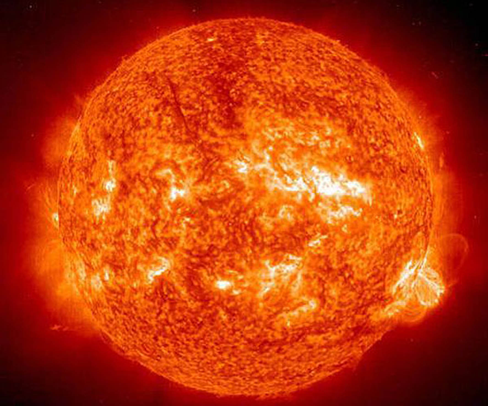

El Sol es la única estrella de nuestro sistema solar. Su influencia y gravedad mantiene unido todo lo que gira alrededor de él, y su luz, calor y energía son el motor que propicia la vida en la Tierra. En este artículo te contamos todo lo que deberías conocer sobre el Sol.

El Sol es una estrella de tipo espectral G2 y luminosidad V, es decir, una estrella G2V. Esta no es otra cosa que la forma rápida y abreviada que tienen los astrónomos para referirse a las estrellas enanas amarillas que poseen entre 0,8 y 1,2 masas solares. Tiene una edad aproximada de 4.500 millones de años y se encuentra a unos 150 millones de kilómetros de nuestro planeta.
El Sol está ubicado uno de los brazos espirales secundarios de la Vía Láctea, el brazo de Sagitario, en un espolón conocido como brazo de Orión. La estrella gira sobre su eje con una inclinación de 7,25º con respecto a su orbita alrededor del Sol, sobre la que se desplaza a una velocidad de 720.000 kilómetros por hora.